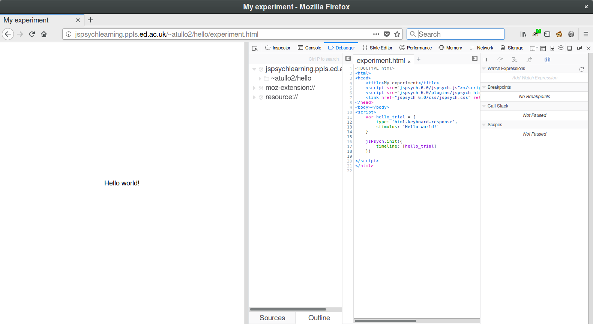
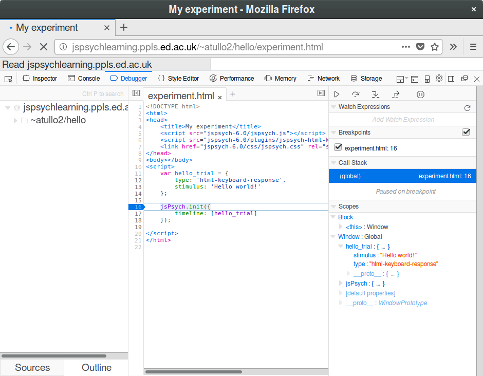

An introduction to jsPsych¶
jsPsych is a JavaScript framework that makes it easier to construct presentation experiments.
Credit: If you use jsPsych, please credit its creator, Joshua R. de Leeuw. He requests that users of jsPsych do this by citing the following paper:
Overview¶
Documentation and examples¶
Throughout this talk and the practical please keep the documentation handy.
jsPsych website: https://www.jspsych.org
MDN (for HTML, CSS and JavaScript): https://developer.mozilla.org/
Most of the time for HTML, CSS and JavaScript docs, typing “mdn <something>” into a search engine will get you the right page. For example if I search for
mdn array
the first result is:
https://developer.mozilla.org/en-US/docs/Web/JavaScript/Reference/Global_Objects/Array
Also please refer to the front page where there are many examples you can refer to. Feel free to copy these and adapt them to what you need.
Some of the examples use a test set of images of animals (Dog1.jpg etc.).
If you’d like to use these you can download them from here:
How it works¶
A typical jsPsych experiment will follow a sequence something like this:
1. First, the experiment is loaded from the server onto the participant’s web browser (client). This is just like loading any other web page, so everything you saw in the previous talk about the network, web pages, HTML, CSS and so on applies here.

2. Now the experiment runs. This can happen entirely within the participant’s web browser – it may not need to talk to the server at all. (It might though, for example to load images).

3. Finally, the experiment sends the results from the experiment back to the server.

What can jsPsych do?¶
In theory anything that your browser can do!
In practice, the plugins are oriented around a set of specific interactions
This covers lots of cases, but not everything
You can write your own plugins (and this is easier than you might think)
When not to use jsPsych?¶
For very interactive stuff (realtime interaction) it might be better to use something else (e.g. p5.js)
Not designed for multi-participant experiments – use oTree or custom JavaScript with WebSockets
Might be too much for some tasks, survey software is often more capable than you think
Anatomy of jsPsych experiment code¶
A jsPsych experiment must contain:
Definition of a series of nodes, and
A call to the jsPsych.init() function to start the experiment.
Let’s look at these two in turn.
Nodes¶
Every jsPsych experiment is a series of nodes. Most nodes show a stimulus, or a set of stimuli, and then collect a response. Here’s an example:
var trial = {
type: 'html-keyboard-response',
stimulus: 'Hello world!'
}
This defines a jsPsych node, which displays the text “Hello world!” and collects a response from the keyboard.
Every node that displays content must have a “type” field. This value corresponds to the list of plugins on the jsPsych website. Go back to the jsPsych website and click on “Plugins” for the full list.
These plugins allow you to do different things like:
Present a stimulus and collect a keyboard response
Present a stimulus and collect a click response (button)
Present a multiple choice question
and many others. You can write your own plugins to do things that aren’t possible with default jsPsych – this requires some JavaScript skills but can be easier than you think depending on the task. Often it’s possible to adapt one of the built-in plugins.
Each kind of node can be set up using different parameters. The name of each parameter is the thing before the colon : in the code above. For example:
stimulus: 'Hello world!'
means “the value of the stimulus parameter should be 'Hello world!'.
Let’s look at the page for the jspsych-html-keyboard-response plugin on the jsPsych website.
You’ll notice that most of these parameters weren’t specified in our example.
Every parameter has a default value. If a value isn’t given, jsPsych will use
this default value. In the case of html-keyboard-response, for example, the default
for trial_duration is null. In the documentation it says:
If this is null, then the stimulus will remain visible until the trial ends.
In other words, the default is to wait until the trial ends. This leads to
another question – when does the trial end? Take a look at the
response_ends_trial parameter.
Timelines¶
In jsPsych the word “timeline” refers to a sequence of nodes. This can be “the” timeline which represents the whole experiment, or a smaller timeline representing part of it.
In our small example:
jsPsych.init({
timeline: [trial]
});
Here the timeline is just one item in a list,
jsPsych.init¶
Here’s that minimal example of a jsPsych experiment again:
var trial = {
type: 'html-keyboard-response',
stimulus: 'Hello world!'
};
jsPsych.init({
timeline: [trial]
});
jsPsych.init is the function which runs the whole experiment. It takes
one parameter which is a JavaScript object. (Reminder: a JavaScript object,
similar to a Python dictionary, is a set of named values). This object must
at least contain a timeline which is a list of nodes.
Go back to the jsPsych website and Core Library API > jsPsych. As with the plugin we looked at, there are lots of other options. Important ones to note are
on_finish, usually used for saving the datapreload_....options used to avoid loading delays during the experiment (instead these delays occur at the start)show_preload_progress_barto use with the above
Exercise 1 – First experiment¶
Installing jsPsych¶
Log in to your server using SSH.
Make sure that jsPsych is activated using the commands you were given in the server instructions (6.2 Enabling jsPsych).
Now let’s make a directory for jsPsych to live in, download and unpack it.
We’ll need to install unzip to do this.
sudo apt install unzip
cd /var/www/html
mkdir jspsych-6.1.0
cd jspsych-6.1.0
wget https://github.com/jspsych/jsPsych/releases/download/v6.1.0/jspsych-6.1.0.zip
unzip jspsych-6.1.0.zip
rm jspsych-6.1.0.zip
CyberDuck¶
Before we go to the first exercise, it would be useful to make sure that CyberDuck can edit files on the server directly – this will save you a lot of time.
The Exercise¶
Your first exercise is to get the first experiment working on the server!
HTML code:
<!DOCTYPE html>
<html>
<head>
<title>Example experiment</title>
<script src="../jspsych-6.1.0/jspsych.js"></script>
<script src="../jspsych-6.1.0/plugins/jspsych-html-keyboard-response.js"></script>
<script src="experiment.js"></script>
<link href="../jspsych-6.1.0/css/jspsych.css" rel="stylesheet" type="text/css"></link>
</head>
<body>
</body>
</html>
JavaScript code:
var trial = {
type: 'html-keyboard-response',
stimulus: 'Hello world!'
};
jsPsych.init({
timeline: [trial]
});
Create a new folder called
helloin/var/www/htmlon the serverLook at the code above
Copy the HTML into a file called
experiment.htmland the JavaScript into
a file called
experiment.js
Transfer both of these into the new folder that you created on the server
Test out your experiment! The experiment will be on your server at
https://<name>.cogsciexperiment.au.dk/hello/experiment.html(fill in your server name of course!)
Once the experiment is working, you will see “Hello world!”, which should
disappear when you press a key
Breakout
I’ll walk through these steps, then we’ll go in to breakout groups to make sure it’s working for everyone. You may find the information in Practicalities below useful if you get stuck.
More experiments¶
Throughout this practical, it’s wise to keep a copy of the code for each
exercise once it’s working. When you start working on a new example, usually
you’ll want to start from
a copy of the previous one. To do this, either use cp -r in the terminal, e.g.
cp -r /var/www/html/hello /var/www/html/next_example
or use “Duplicate” in CyberDuck.
Practicalities¶
Terminology – Arrays / lists¶
In JavaScript an Array is a list of items, written:
var my_list = ["orange", "apple", "banana", "pear", "grapefruit"];
I’ve generally used the term “list” for this as I find it more natural (and it suits the many people who learned Python first!) but please bear in mind that a lot of documentation and examples will refer to this as an array.
File paths¶
The examples in this document assume that jsPsych and record_result.php,
are in /var/www/html, and that all of your experiments are in
subdirectories of /var/www/html. (We’ll go through installing jsPsych in a
moment). For example, with two experiments, I have:
/var/www/html
├── hello
│ ├── hello.html
│ └── hello.js
├── index.html
├── loop
│ ├── loop.html
│ └── loop.js
├── record_result.php
└── jspsych-6.1.0
├── jspsych.js
└── ....
So from loop.html, I can reference jspsych.js like this:
<script src="../jspsych-6.1.0/jspsych.js"></script>
Bear this in mind when looking at the examples, you will have to adapt the
paths for jsPsych and record_result.php to the location of these files
on your server.
Single file jsPsych experiment¶
You will sometimes see another style used, where the experiment code is inside the HTML file, rather than in its own file:
<!DOCTYPE html>
<html>
<head>
<title>Example experiment</title>
<script src="../jspsych-6.1.0/jspsych.js"></script>
<script src="../jspsych-6.1.0/plugins/jspsych-html-keyboard-response.js"></script>
<link href="../jspsych-6.1.0/css/jspsych.css" rel="stylesheet" type="text/css"></link>
</head>
<body>
</body>
<script>
var trial = {
type: 'html-keyboard-response',
stimulus: 'Hello world!'
};
jsPsych.init({
timeline: [trial]
});
</script>
</html>
This is confusing for all but the simplest experiments, but worth mentioning in case you come across it in other people’s code.
HTML file and referencing JavaScript and CSS¶
The order of inclusion of JavaScript files is important. In our example:
<script src="../jspsych-6.1.0/jspsych.js"></script>
<script src="../jspsych-6.1.0/plugins/jspsych-html-keyboard-response.js"></script>
<script src="experiment.js"></script>
The plugin depends on the jsPsych code – it doesn’t make sense without it – so you must load jsPsych first. Likewise our experiment depends on both the plugin and the core jsPsych library, so they must both be loaded before you load the experiment. The order must always be:
jspsych.jsAll plugins you are using (forgetting to add these is a common mistake!)
Your experiment file
In the example I’m using relative paths for JavaScript files. For example:
<script src="experiment.js"></script>
means “load the experiment.js file, which is in the same directory 1
as the HTML file”. And:
<script src="../jspsych-6.1.0/jspsych.js"></script>
means “go up one directory, look for jspsych-6.1.0, then in that
jspsych.js”.
You could also use full links for your JavaScript files (“https://…./experiment.js”) but it’s not necessary.
CSS (stylesheet) code is included using the <link> tag. If you want to
add your own style, I recommend that you add your own stylesheet and link to it
last – that way it will take precedence over anything defined in
jspsych.css. For example:
<link href="../jspsych-6.1.0/css/jspsych.css" rel="stylesheet" type="text/css"></link>
<link href="experiment.css" rel="stylesheet" type="text/css"></link>
(This isn’t required for anything in the exercises, though!)
Browser Developer Tools¶
When writing any computer program, it’s always good to have some tools to help you find out what’s going on. This is particularly important when something goes wrong! For an online experiment in JavaScript, you can use the web developer tools in your browser. All recent versions of browsers have these tools built in.
First, here’s how to open developer tools for your browser:
- Firefox
In the menu, Web Developer → Toggle Tools (or Ctrl-Shift-I)
- Chrome
In the menu, More Tools → Developer Tools (or Ctrl-Shift-I)
- Internet Explorer/Edge
Press F12 to start Developer tools
- Safari
Preferences → Advanced and check “Show Develop menu in menu bar”. Then Develop → Show Web Inspector
In my examples I’ll use Firefox, but these are all fairly similar.
Go to the page for your experiment – use the link for the uploaded copy on the server, not the copy on your computer.
Now go to the web page for the example experiment you created. Enable Developer Tools (see the list above) and reload the page. You’ll see something like this:

The console¶
Click on the tab marked “Console”. This contains messages from your web browser. Most useful are the errors! Open your experiment JavaScript file and break the code.
Yes, I’m actually telling you to break the code! The easiest way is to delete a bracket –
(,[or{, as if these are not in matching pairs that will cause an error.
Now reload the page. You should see something like this:

There’s an error reported in the console, in red. This will give you a clue as to where the problem is! You can click on the links on the right which will show you the relevant parts of the code. While error messages can be a little cryptic, there’s usually something which will help, like “missing }”.
Now fix your experiment!
The debugger¶
These tools can also allow you to step through the code line-by-line. Now click on the tab marked “Debugger” or “Sources”. You’ll see something like this:
Here you can see your code, and watch it run. Click in the margin next to the code, on the line:
jsPsych.init({
Now reload the page. The program has stopped on that line. The point that you chose by clicking in the margin is called a breakpoint.
On the right there’s a sidebar called “Scopes”. (This has other names in other browsers, but there should be a list of names and values somewhere). Here you’ll be able to see what value different variables have. Some of these are built in to the browser, or part of the internal workings of jsPsych – don’t worry about these for now.
The important thing to note is that you can see the value for the node (in the tutorial,
this is called trial). As you build up a more complex program there will be
many variables, and their values can change as the program runs, so it’s good
to know that you can inspect this as the program runs.
You can also continue running the program. These tools, or something like them, will be near the code:

The first of these controls (the triangle or “play button”) lets the program continue running until it finishes, or until another breakpoint is reached. The second steps through the code gradually, one line at a time.
The console again¶
The console also allows you to try out bits of JavaScript. This can be really useful for learning, or trying out a small example to figure out why something doesn’t work.
(Note: in Firefox there is a distinction between “Web Console” and “Browser Console”. The first one shows just the errors for the page we’re on – this is the one we want to use.)
Let’s try out the Array (list) method .filter(). This takes a function and returns
all the items for which the function returns true.
So in this code (try it!):
var example = [10, 5, 7, 13, 8, 22];
example.filter(function(x) { return x > 10; });
wherever the value in the list is greater than 10, x > 10 is true, and
so it’s included in the result. Where x > 10 is false, it’s not
included.
Note that I didn’t have to do anything to print out the value. This is a convenience in the JavaScript console interface – if a value is returned it assumes you want to see it! (This happens in other environments too, for example the Python and MATLAB prompts do the same thing).
There are lots of useful methods like this in JavaScript, particularly for Array and String. If you find yourself writing custom code for something that seems like it should be simple, take a look as it might already be built in to the JavaScript language. You can also include JavaScript libraries other than jsPsych to add extra functionality.
That concludes the introduction to Developer Tools. Don’t worry if you didn’t understand everything on the screen when it was running – the important thing is to know that it’s there to help you when your program isn’t working!
Some more capabilities of jsPsych¶
Repeating over sets of stimuli¶
A common pattern is to repeat the same type of trial, but with a different stimulus. The long way to do this in jsPsych is just to type out the full node each time:
var trial1 = {
type: 'html-keyboard-response',
stimulus: 'Hello world!'
};
var trial2 = {
type: 'html-keyboard-response',
stimulus: 'Nice to see you world!'
};
var trial3 = {
type: 'html-keyboard-response',
stimulus: 'Hey world!'
};
jsPsych.init({
timeline: [trial1, trial2, trial3]
});
This will be extremely laborious (and error prone) for all but the simplest experiments, though. You could also use a JavaScript loop. This has the advantage that the trial list can be inspected (printed to the console, or looked at in the debugger) when it’s finished, so you can check exactly what jsPsych has been given:
var stimulus_list = [
'Hello world!',
'Nice to see you world!',
'Hey world!'
]
trials = []; // start an empty list
for (var greeting of stimulus_list) {
var trial = {
type: 'html-keyboard-response',
stimulus: greeting
};
trials.push(trial); // add to the end of the list
}
// e.g. print to Console
console.log(trials);
jsPsych.init({
timeline: trials
}); // "trials" is already a list
Finally, you can use jsPsych’s timeline variable feature:
// Note that this is now a list of JavaScript objects
var stimulus_list = [
{ stim: 'Hello world!'},
{ stim: 'Nice to see you world!'},
{ stim: 'Hey world!'}
]
var trial = {
type: 'html-keyboard-response',
stimulus: jsPsych.timelineVariable("stim")
};
// this counts as a single node, but a special one which tells jspsych
// "repeat this timeline with these variables"
var trials_with_variables = {
timeline: [trial],
timeline_variables: stimulus_list
};
jsPsych.init({
timeline: [trials_with_variables]
}); // "trials_with_variables" counts as a single node, so make it into a list
Instead of explicitly constructing all of the nodes, we create a special node
(trials_with_variables) which tells jsPsych “repeat this timeline with these
values”. This is an extremely powerful feature of jsPsych but special care is
needed if you want to modify the values in any way before using them – more
about that later.
Randomisation and repeats¶
jsPsych has randomisation built in! Take a look at the
jspsych.randomization.repeats function in “Core Library API”.
This takes an array (list) of values and randomises them with the number of repeats requested. (If you don’t want repeats, you can set this to 1 of course).
This list can be a list of nodes, or a stimulus list. So, you could use this to randomise our input stimulus list, before applying timeline variables:
// Note that this is now a list of JavaScript objects
var stimulus_list = [
{ stim: 'Hello world!'},
{ stim: 'Nice to see you world!'},
{ stim: 'Hey world!'}
]
var trial = {
type: 'html-keyboard-response',
stimulus: jsPsych.timelineVariable("stim")
};
// this counts as a single node, but a special one which tells jspsych
// "repeat this timeline with these variables"
var trials_with_variables = {
timeline: [trial],
timeline_variables: jsPsych.randomization.repeats(stimulus_list, 3)
}; // use repeats to repeat each item 3 times and randomise
jsPsych.init({
timeline: [trials_with_variables]
});
Here’s another full example using repeats:
Factorial design¶
Let’s say that you want to show our three different example stimuli for two different durations, and use all the possible combinations of these.
stimulus |
stimulus_duration |
|---|---|
Hello world! |
250 |
Nice to see you |
250 |
Hey world! |
250 |
Hello world! |
500 |
etc. |
etc. |
var stimulus_list = [
'Hello world!',
'Nice to see you world!',
'Hey world!'
];
var duration_list = [250, 500]; // all timings in jsPsych are in ms
var factors = { stim: stimulus_list, duration: duration_list };
factorial_values = jsPsych.randomization.factorial(factors);
Now factorial_values looks like this:
[
{ stimulus: "Hello world!", duration: 250 },
{ stimulus: "Nice to see you world!", duration: 250 },
{ stimulus: "Hey world!", duration: 250 },
{ stimulus: "Hello world!", duration: 500 },
// etc.
]
This is the JavaScript code equivalent of our table above. To use the durations, introduce an extra timeline variable:
var trial = {
type: 'html-keyboard-response',
stimulus: jsPsych.timelineVariable("stim"),
stimulus_duration: jsPsych.timelineVariable("duration")
};
Some full examples¶
Here are two full examples using factorial design. One uses a loop-based approach, accumulating nodes:
Multiple images (using a loop)
and the other uses timeline variables:
Duration and ending trials¶
If you go back to the documentation on html-keyboard-response, you’ll see that
stimulus_duration controls how long the stimulus is displayed; under some
circumstances you might want to use trial_duration instead (or as well).
You’ll also wish to consider response_ends_trial. It’s common to need to
display something for a fixed duration, without needing a response. In this
case we can set trial_duration to the duration we want, and
response_ends_trial to false.
Such a node will still appear in the results though. This is unavoidable but
you can make it easier to filter out later by adding the data parameter.
var fixation = {
type: 'html-keyboard-response',
stimulus: '+',
trial_duration: 300,
response_ends_trial: false,
data: { trial_type: 'fixation' }
}
This data parameter will create a new column in the results, and for this node
it will have the value “fixation”. (For nodes where it’s not defined, it
will be empty).
Exercise 2 – Stroop task¶
Let’s create a Stroop task in jsPsych.
In general when creating an experiment,
it’s useful to break the task down into smaller, easily testable things that we
can do. So for now, let’s skip saving data, and just use
jsPsych.data.displayData to show the results at the end.
Here’s a list of progressively harder tasks to guide you towards a solution:
Display a word in large text in the centre of the screen
Vary the colour of the word
Generate trials for all word / colour combinations using factorial design (in a real experiment we’d want 50% congruent and 50% incongruent trials – I’ll leave that to the end!)
Add a fixation cross before the word stimulus, and a blank screen for an inter-trial interval afterwards.
Hints to get you started on this task:
You can apply some style to text in HTML without changing the CSS file. You can enclose the text in tags and use
style=. For example:<span style="font-weight: bold">word</span>.Look up the CSS properties
font-sizeandcolor– remember MDN is good for this!A blank screen can just be a
html-keyboard-responseshowing an empty string (stimulus: "")
Breakout
Let’s go into our breakout groups to work on this task.
Three examples give possible solutions to this exercise:
Seeing the results (and back to functional programming)¶
Eventually, you’ll want to save data to the server. In the meantime, there’s a function built in to jsPsych to see the results of an experiment in the browser window. This is useful when you’re working on the experiment (and of course for learning).
jsPsych.init({
timeline: [trials_with_variables],
on_finish: function() {
jsPsych.data.displayData('csv');
}
});
What’s going on here? A function is defined and given to jsPsych.init in the
on_finish parameter. jsPsych will store that function and run it when the
experiment ends. This is called an “anonymous” function, simply because it
doesn’t have a name. You could equally well define a function and give its name:
function show_code() {
jsPsych.data.displayData('csv');
}
jsPsych.init({
timeline: [trials_with_variables],
on_finish: show_code
});
This is an unusual style in JavaScript, though. Finally, newer versions of JavaScript have an alternative way of defining functions called the “arrow syntax”. If you used this, it would look like:
jsPsych.init({
timeline: [trials_with_variables],
on_finish: () => { jsPsych.data.displayData('csv'); }
});
I won’t use this in our examples, but I mention it because you might see it in other code examples.
This goes back to the previous discussion of the functional programming style. Passing a function in to another function, to be executed later, is characteristic of this style.
Extra Exercise - Participant numbers¶
Allocating participant and condition numbers
More advanced use of timeline variables¶
In the example with stimulus_list above, let’s say that I want the greeting
to be in a heavy font style.
In HTML this would be:
<strong>Hello world!</strong>
Note that this is just a hint to the browser – though the convention is that
browsers render it as boldface. Something like a screen reader may
raise the volume for the “strong” text, for example. CSS can also define
strong to mean something else.
Going back to the example, we could just add this to each stimulus manually:
var stimulus_list = [
'<strong>Hello world!</strong>',
'<strong>Nice to see you world!</strong>',
'<strong>Hey world!</strong>'
];
This is fine for a small example, but what if you have 50 stimuli? If you then
changed your mind and decided to use <em>, you’d have to go back and edit
them all with find and replace! You might think we could just do this:
// **** THIS IS WRONG, DON'T DO THIS ****
var trial = {
type: 'html-keyboard-response',
stimulus: jsPsych.timelineVariable("stim"),
stimulus_duration: "<strong>"+jsPsych.timelineVariable("duration")+"</strong>"
};
Unfortunately this doesn’t work! The reasons why are beyond the scope of this workshop – for now, just note that if you want to do anything non-trivial with a timeline variable, you have to:
enclose it in a function, and
give it an extra parameter set to
trueto let it know that it’s being used in this different way.
The correct way to add the <strong> tags would be:
var trial = {
type: 'html-keyboard-response',
stimulus: jsPsych.timelineVariable("stim"),
stimulus_duration: function() {
return "<strong>"+jsPsych.timelineVariable("duration", true)+"</strong>"
} // note extra ", true" above, it's a common mistake to leave it out
};
Other useful parameters for timeline nodes¶
If you’ve defined a node to repeat a timeline over a set of values for timeline variables, you can also easily add repeats, randomisation and sampling. For example:
var trials_with_variables = {
timeline: [trial],
timeline_variables: stimulus_list,
randomize_order: true,
repetitions: 5
};
Note that this differs from jsPsych.randomization.repeats – that function
mixes all of the repeats together. Using repetitions will repeat the whole
set (in a random order) a certain number of times.
There are also options for sampling from a list of trials, see https://www.jspsych.org/overview/timeline/#sampling-methods .
Flow control¶
Either using a list of nodes, or timeline variables, it’s possible to run through a sequence of predetermined actions. What if you want to do something depending on a participant’s responses?
jsPsych has the ability to:
repeat a timeline while a condition is true
display a timeline or not, depending on a condition
Looping¶
Adding the loop_function attribute to a node will make it repeat
as long as the given function returns true. Typically this is used for
practice trials which you wish to repeat until the participant gets the correct
answer.
Conditional¶
Similarly, the condition_function parameter gives a function to be run
whenever the node is reached; if it returns true then the node is run,
otherwise it isn’t.
This can be used for things like screening out participants who do badly (or have poor quality data which suggests they aren’t paying attention) in practice trials.
There are examples of looping and conditionals in the jsPsych documentation, under “Overview”.
Getting hold of data inside the experiment¶
In order to use looping or conditionals, we need access to data inside the experiment – asking questions like “what was the last response”?
jsPsych.data.get()
gets hold of the whole dataset – but this is a DataCollection object.
To get hold of the last result we can use:
jsPsych.data.get().values()[0]
This is where it becomes valuable to add extra fields to your nodes under the
data parameter. These will always appear in the results, which will make it
easier to filter results. For example, if you have “experiment” and “filler”
trials and they are appropriately marked, something like:
jsPsych.data.get().filter({trial_type: "experiment"}).values()[0]
would give the last experiment trial.
Footnotes
- 1
On some computers, these are also called “folders”.

{kind=link}
{kind=link}